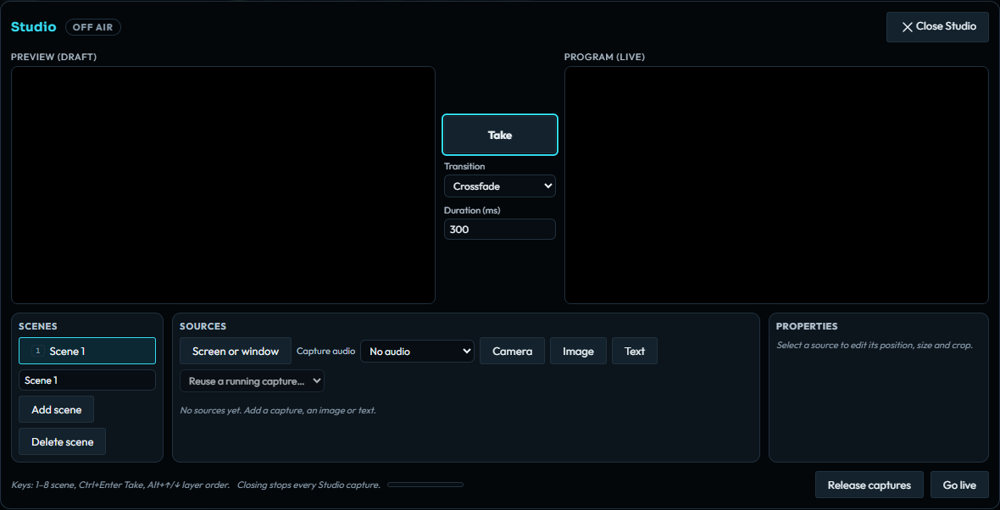

Using noXa · Public alpha
Compose a live stream with Desktop Studio
Build scenes from screens, cameras, images, and text, preview changes, and publish one composed channel share.
Open Studio without starting a capture
Studio is part of the desktop client. It combines several sources into one picture and publishes it through your voice channel’s normal screen-share path. Channel permissions, encryption support, and server video limits still apply.
- Connect to the intended server and join the voice channel you want to share with.
- In the voice bar, choose More → Studio.
- Check the Off air status and the separate Preview (draft) and Program (live) areas before adding sources.
Opening the panel captures nothing. Studio does not start your screen or camera until you explicitly add the corresponding source and approve its capture.


Build a scene in Preview
- Use Add scene to organize layouts. A Studio can hold up to eight scenes, each with up to eight sources.
- Add Screen or window, Camera, Image, or Text, or choose Reuse capture for a capture already running.
- Select a source and use its Properties to change position, size, crop, and layer order. Show or hide sources as needed.
- Select another scene with keys 1–8. Use Alt+↑ or Alt+↓ to move the selected source in the layer order.
Camera sources are video only. Images must be PNG or JPEG, at most 8 MB and 4096 × 4096 pixels. Text supports up to 280 characters using system fonts.
Changes stay in Preview. Editing a source, selecting a different scene, or hiding a draft source does not by itself change the current Program.
Take the draft to Program, then go live
- Choose Cut or Crossfade. A crossfade duration can be 100–1500 ms.
- Press Take, or Ctrl+Enter, to put the selected draft scene on Program.
- Stop any existing ordinary screen share, then choose Go live. Studio cannot publish alongside another screen share.
- Check the Live state and Program picture. Continue preparing changes in Preview and press Take only when they are ready.
- Choose Stop to end publication.
The composed output is 1280 × 720 at 30 fps, reduced when necessary to fit server video limits. It is end-to-end encrypted like other channel media. The negotiated video codec can be H.264 or the VP8 compatibility option; HEVC is unavailable. Studio requires runtime-verified hardware encoding, so it stops with an explanation when the encoder is software-based or its hardware acceleration cannot be verified.
Choose the program’s audio deliberately
Studio sends only screen-capture audio from sources visible on Program with their audio routing enabled. It never mixes the microphone into the composed stream. Your channel microphone remains a separate audio path.
- When creating a screen capture, make the intended audio choice in its capture controls and system picker.
- For the source, enable Stream this capture’s audio only when wanted.
- Review the draft, then use Take. Audio routing changes together with the picture at Take.
- Check the Studio audio level and what viewers can hear before moving to sensitive application windows.
A reused capture is shared once even if several scenes contain it. Hidden program sources do not contribute audio. Runtime and system-picker limits for shared-application audio still apply.
Restore layouts and release captures
The device stores the layout in local storage and up to 16 images totaling 32 MB in IndexedDB. Unused images are removed. Source images and scenes are local material; keep a separate copy of assets you need.
Captures are never automatically restored. After a restart, use Recapture for each screen or camera source. Check the new picture before taking the scene live.
Closing while off air stops Studio captures. Closing while live retains the program and stops captures used only by the draft. Use Release captures when finished. Switching channel, server, or account ends Studio.
If Go live fails, check that there is no other running screen share, that channel sharing is permitted, and that secure messaging and encrypted channel media are ready. See troubleshooting for capture and encryption failures.